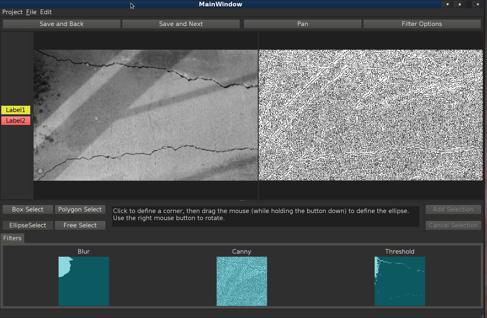

SelectItems are used to annotate regions of images. There are four basic types of SelectItems:
- RectangleSelect for selecting rectangular regions
- EllipseSelect for selecting elliptical regions
- PolygonSelect for irregularly shaped regions
- FreeDrawSelect for drawing regions with a brush
Every selection region must be associated with a Label so that it is properly annotated. The following sections describe how to use each of the tools. Note: In each of the graphical demonstrations a red circle around the mouse indicates a mouse button is being pressed.
RectangleSelect and EllipseSelect
Both of these tools are described by an enclosing rectangular box and are interacted with in the same way. Only the rendering of the shape of the selected region differs between the two.
Drawing
In order to draw either of these shapes, select a Label and the appropriate tool button. Left click to define the top left corner, then drag the mouse (while keeping the button depressed) to define the region, and release the button to complete the selection.
Drawing a rectangular region.
Moving
These items can be moved by clicking on them and dragging the mouse with the left button pressed. Release to button to place the item.
Moving a rectangular region.
Resizing
RectangleSelect and EllipseSelect items can also be resized. This is done by left clicking on one of the corners of the defining box and dragging the mouse while keeping the button depressed. Release the button to place the corner.
Resizing a rectangle.
Rotating
These items can also be rotated about their center. This is done by right clicking on the object and dragging the mouse while keeping the button depressed. Release the button to place the item.
Rotating a rectangle.
Manipulating an elliptical region.
PolygonSelect
PolygonSelect items can be used to select any region which can be desribed by straight line segments.
Drawing
To draw a polygon region, select a Label and the Polygon button. Vertices of the polygon are denoted by clicking the left mouse button. Click the "Finish Polygon" button when done.

Defining a polygon region.
Adding Vertices
Vertices can be added one after another by clicking the left mouse button. A vertex can also be added between two existing vertices by first clicking on the "Insert Point Between" button, then clicking on the two vertices which you want to insert a vertex between. Then click a point to add a vertex.

Adding a vertex to a polygon.
Manipulating a Polygon
PolygonSelect items can be manipulated in the same way as RectangleSelect and EllipseSelect items. Click and drag in the center to move, and click and drag on a vertex to change its position. PolygonSelect items cannot be rotated.
Manipulating a polygon region.
Individual vertices can be deleted from a polygon by left clicking to select the vertex, then press the backspace key to delete it.
FreeDrawSelect
FreeDrawSelect items are used to create selections based on drawing with a brush. Both round and square brushes are available and the brush size can be adjusted.
Drawing
To use this tool, select a Label and the FreeDraw button. Then left click and move the mouse (while holding the button down) to paint the region.

Painting a selection region.
Manipulating
FreeDrawSelect items cannot be moved, resized, or rotated, however you can use the "Erase" button to select an eraser. "Draw" on the image to erase points.

Erasing paint strokes.
Drawing on the Mask
When you draw SelectItems on the Mask (right had side), only pixels which are not masked (white on the Mask) will be included in the final selection. For RectangleSelect, EllipseSelect, and PolygonSelect items draw on the Mask as normal, but you must click on the "Add Selection" button to compute the actual pixels selected and add them to the display. Once ths button is clicked the original SelectItem is discarded for the new pixel selection. Clicking on the "Cancel Selection" button to discard the selected region before applying it.
Drawing a rectangle region on the Mask and applying the results.
For the FreeDrawSelect the drawing is done as it is on the image, however there is no need to add the selection as the masked pixels are calculated when the mouse button is released.
Free drawing on the Mask.
Undo and Redo
Any selection action (add, move, rotate, resize, erase) can be undone and redone by using the menu or the shortcut keys (Ctrl-z and Crtl-Shift-Z).
Undo and redo
In the case of drawing on the Mask, actions can be undone and redone for RectangleSelect, EllipseSelect, and PolygonSelect before the "Add Selection" button is clicked. Once the selection has been merged with the mask the undo/redo actions will only remove or add back the computed pixels.
Undo/redo on the mask.

Undo/redo after adding.